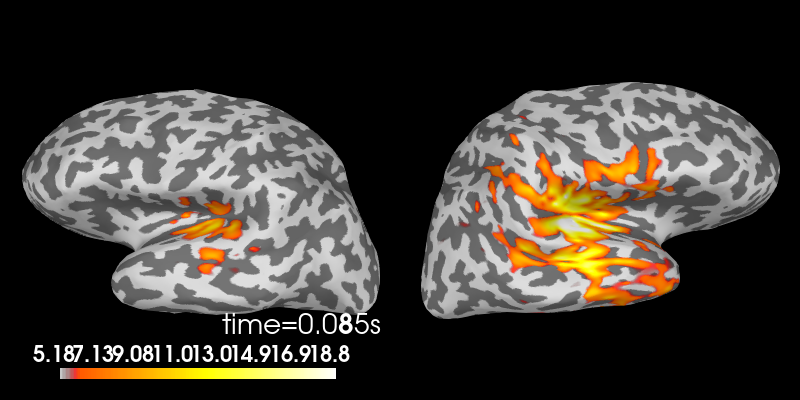
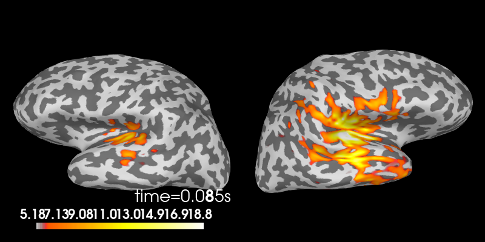

Note
Go to the end to download the full example code
Make figures more publication ready#
In this example, we show several use cases to take MNE plots and customize them for a more publication-ready look.
# Authors: Eric Larson <larson.eric.d@gmail.com>
# Daniel McCloy <dan.mccloy@gmail.com>
# Stefan Appelhoff <stefan.appelhoff@mailbox.org>
#
# License: BSD-3-Clause
Imports#
We are importing everything we need for this example:
import numpy as np
import matplotlib.pyplot as plt
from mpl_toolkits.axes_grid1 import (make_axes_locatable, ImageGrid,
inset_locator)
import mne
Evoked plot with brain activation#
Suppose we want a figure with an evoked plot on top, and the brain activation below, with the brain subplot slightly bigger than the evoked plot. Let’s start by loading some example data.
data_path = mne.datasets.sample.data_path()
subjects_dir = data_path / 'subjects'
fname_stc = data_path / 'MEG' / 'sample' / 'sample_audvis-meg-eeg-lh.stc'
fname_evoked = data_path / 'MEG' / 'sample' / 'sample_audvis-ave.fif'
evoked = mne.read_evokeds(fname_evoked, 'Left Auditory')
evoked.pick_types(meg='grad').apply_baseline((None, 0.))
max_t = evoked.get_peak()[1]
stc = mne.read_source_estimate(fname_stc)
Reading /home/circleci/mne_data/MNE-sample-data/MEG/sample/sample_audvis-ave.fif ...
Read a total of 4 projection items:
PCA-v1 (1 x 102) active
PCA-v2 (1 x 102) active
PCA-v3 (1 x 102) active
Average EEG reference (1 x 60) active
Found the data of interest:
t = -199.80 ... 499.49 ms (Left Auditory)
0 CTF compensation matrices available
nave = 55 - aspect type = 100
Projections have already been applied. Setting proj attribute to True.
No baseline correction applied
Removing projector <Projection | PCA-v1, active : True, n_channels : 102>
Removing projector <Projection | PCA-v2, active : True, n_channels : 102>
Removing projector <Projection | PCA-v3, active : True, n_channels : 102>
Removing projector <Projection | Average EEG reference, active : True, n_channels : 60>
Applying baseline correction (mode: mean)
During interactive plotting, we might see figures like this:
evoked.plot()
stc.plot(views='lat', hemi='split', size=(800, 400), subject='sample',
subjects_dir=subjects_dir, initial_time=max_t,
time_viewer=False, show_traces=False)
 
Using control points [ 5.17909658 6.18448887 18.83197989]
To make a publication-ready figure, first we’ll re-plot the brain on a white background, take a screenshot of it, and then crop out the white margins. While we’re at it, let’s change the colormap, set custom colormap limits and remove the default colorbar (so we can add a smaller, vertical one later):
colormap = 'viridis'
clim = dict(kind='value', lims=[4, 8, 12])
# Plot the STC, get the brain image, crop it:
brain = stc.plot(views='lat', hemi='split', size=(800, 400), subject='sample',
subjects_dir=subjects_dir, initial_time=max_t, background='w',
colorbar=False, clim=clim, colormap=colormap,
time_viewer=False, show_traces=False)
screenshot = brain.screenshot()
brain.close()
Now let’s crop out the white margins and the white gap between hemispheres.
The screenshot has dimensions (h, w, 3), with the last axis being R, G, B
values for each pixel, encoded as integers between 0 and 255. (255,
255, 255) encodes a white pixel, so we’ll detect any pixels that differ
from that:
nonwhite_pix = (screenshot != 255).any(-1)
nonwhite_row = nonwhite_pix.any(1)
nonwhite_col = nonwhite_pix.any(0)
cropped_screenshot = screenshot[nonwhite_row][:, nonwhite_col]
# before/after results
fig = plt.figure(figsize=(4, 4))
axes = ImageGrid(fig, 111, nrows_ncols=(2, 1), axes_pad=0.5)
for ax, image, title in zip(axes, [screenshot, cropped_screenshot],
['Before', 'After']):
ax.imshow(image)
ax.set_title('{} cropping'.format(title))
A lot of figure settings can be adjusted after the figure is created, but
many can also be adjusted in advance by updating the
rcParams dictionary. This is especially useful when your
script generates several figures that you want to all have the same style:
# Tweak the figure style
plt.rcParams.update({
'ytick.labelsize': 'small',
'xtick.labelsize': 'small',
'axes.labelsize': 'small',
'axes.titlesize': 'medium',
'grid.color': '0.75',
'grid.linestyle': ':',
})
Now let’s create our custom figure. There are lots of ways to do this step.
Here we’ll create the figure and the subplot axes in one step, specifying
overall figure size, number and arrangement of subplots, and the ratio of
subplot heights for each row using GridSpec keywords. Other approaches (using
subplot2grid(), or adding each axes manually) are
shown commented out, for reference.
# figsize unit is inches
fig, axes = plt.subplots(nrows=2, ncols=1, figsize=(4.5, 3.),
gridspec_kw=dict(height_ratios=[3, 4]))
# alternate way #1: using subplot2grid
# fig = plt.figure(figsize=(4.5, 3.))
# axes = [plt.subplot2grid((7, 1), (0, 0), rowspan=3),
# plt.subplot2grid((7, 1), (3, 0), rowspan=4)]
# alternate way #2: using figure-relative coordinates
# fig = plt.figure(figsize=(4.5, 3.))
# axes = [fig.add_axes([0.125, 0.58, 0.775, 0.3]), # left, bot., width, height
# fig.add_axes([0.125, 0.11, 0.775, 0.4])]
# we'll put the evoked plot in the upper axes, and the brain below
evoked_idx = 0
brain_idx = 1
# plot the evoked in the desired subplot, and add a line at peak activation
evoked.plot(axes=axes[evoked_idx])
peak_line = axes[evoked_idx].axvline(max_t, color='#66CCEE', ls='--')
# custom legend
axes[evoked_idx].legend(
[axes[evoked_idx].lines[0], peak_line], ['MEG data', 'Peak time'],
frameon=True, columnspacing=0.1, labelspacing=0.1,
fontsize=8, fancybox=True, handlelength=1.8)
# remove the "N_ave" annotation
for text in list(axes[evoked_idx].texts):
text.remove()
# Remove spines and add grid
axes[evoked_idx].grid(True)
axes[evoked_idx].set_axisbelow(True)
for key in ('top', 'right'):
axes[evoked_idx].spines[key].set(visible=False)
# Tweak the ticks and limits
axes[evoked_idx].set(
yticks=np.arange(-200, 201, 100), xticks=np.arange(-0.2, 0.51, 0.1))
axes[evoked_idx].set(
ylim=[-225, 225], xlim=[-0.2, 0.5])
# now add the brain to the lower axes
axes[brain_idx].imshow(cropped_screenshot)
axes[brain_idx].axis('off')
# add a vertical colorbar with the same properties as the 3D one
divider = make_axes_locatable(axes[brain_idx])
cax = divider.append_axes('right', size='5%', pad=0.2)
cbar = mne.viz.plot_brain_colorbar(cax, clim, colormap, label='Activation (F)')
# tweak margins and spacing
fig.subplots_adjust(
left=0.15, right=0.9, bottom=0.01, top=0.9, wspace=0.1, hspace=0.5)
# add subplot labels
for ax, label in zip(axes, 'AB'):
ax.text(0.03, ax.get_position().ymax, label, transform=fig.transFigure,
fontsize=12, fontweight='bold', va='top', ha='left')
Custom timecourse with montage inset#
Suppose we want a figure with some mean timecourse extracted from a number of
sensors, and we want a smaller panel within the figure to show a head outline
with the positions of those sensors clearly marked.
If you are familiar with MNE, you know that this is something that
mne.viz.plot_compare_evokeds() does, see an example output in
HF-SEF dataset at the bottom.
In this part of the example, we will show you how to achieve this result on
your own figure, without having to use mne.viz.plot_compare_evokeds()!
Let’s start by loading some example data.
data_path = mne.datasets.sample.data_path()
fname_raw = data_path / "MEG" / "sample" / "sample_audvis_raw.fif"
raw = mne.io.read_raw_fif(fname_raw)
# For the sake of the example, we focus on EEG data
raw.pick_types(meg=False, eeg=True)
Opening raw data file /home/circleci/mne_data/MNE-sample-data/MEG/sample/sample_audvis_raw.fif...
Read a total of 3 projection items:
PCA-v1 (1 x 102) idle
PCA-v2 (1 x 102) idle
PCA-v3 (1 x 102) idle
Range : 25800 ... 192599 = 42.956 ... 320.670 secs
Ready.
Removing projector <Projection | PCA-v1, active : False, n_channels : 102>
Removing projector <Projection | PCA-v2, active : False, n_channels : 102>
Removing projector <Projection | PCA-v3, active : False, n_channels : 102>
Let’s make a plot.
# channels to plot:
to_plot = [f"EEG {i:03}" for i in range(1, 5)]
# get the data for plotting in a short time interval from 10 to 20 seconds
start = int(raw.info['sfreq'] * 10)
stop = int(raw.info['sfreq'] * 20)
data, times = raw.get_data(picks=to_plot,
start=start, stop=stop, return_times=True)
# Scale the data from the MNE internal unit V to µV
data *= 1e6
# Take the mean of the channels
mean = np.mean(data, axis=0)
# make a figure
fig, ax = plt.subplots(figsize=(4.5, 3))
# plot some EEG data
ax.plot(times, mean)
So far so good. Now let’s add the smaller figure within the figure to show
exactly, which sensors we used to make the timecourse.
For that, we use an “inset_axes” that we plot into our existing axes.
The head outline with the sensor positions can be plotted using the
Raw object that is the source of our data.
Specifically, that object already contains all the sensor positions,
and we can plot them using the plot_sensors method.
# recreate the figure (only necessary for our documentation server)
fig, ax = plt.subplots(figsize=(4.5, 3))
ax.plot(times, mean)
axins = inset_locator.inset_axes(ax, width="30%", height="30%", loc=2)
# pick_channels() edits the raw object in place, so we'll make a copy here
# so that our raw object stays intact for potential later analysis
raw.copy().pick_channels(to_plot).plot_sensors(title="", axes=axins)
That looks nice. But the sensor dots are way too big for our taste. Luckily,
all MNE-Python plots use Matplotlib under the hood and we can customize
each and every facet of them.
To make the sensor dots smaller, we need to first get a handle on them to
then apply a *.set_* method on them.
# If we inspect our axes we find the objects contained in our plot:
print(axins.get_children())
[Text(0, 0, ''), <matplotlib.lines.Line2D object at 0x7fa8438b7160>, <matplotlib.lines.Line2D object at 0x7fa8438b5600>, <matplotlib.lines.Line2D object at 0x7fa8549a4790>, <matplotlib.lines.Line2D object at 0x7fa86ef25150>, <matplotlib.collections.PathCollection object at 0x7fa86ef25810>, <matplotlib.spines.Spine object at 0x7fa872bdd750>, <matplotlib.spines.Spine object at 0x7fa872bdcf40>, <matplotlib.spines.Spine object at 0x7fa872bdc910>, <matplotlib.spines.Spine object at 0x7fa872bdf9a0>, <matplotlib.axis.XAxis object at 0x7fa872bddc60>, <matplotlib.axis.YAxis object at 0x7fa87324c130>, Text(0.5, 1.0, ''), Text(0.0, 1.0, ''), Text(1.0, 1.0, ''), <matplotlib.patches.Rectangle object at 0x7fa84359f430>]
That’s quite a a lot of objects, but we know that we want to change the sensor dots, and those are most certainly a “PathCollection” object. So let’s have a look at how many “collections” we have in the axes.
print(axins.collections)
<Axes.ArtistList of 1 collections>
There is only one! Those must be the sensor dots we were looking for. We finally found exactly what we needed. Sometimes this can take a bit of experimentation.
sensor_dots = axins.collections[0]
# Recreate the figure once more; shrink the sensor dots; add axis labels
fig, ax = plt.subplots(figsize=(4.5, 3))
ax.plot(times, mean)
axins = inset_locator.inset_axes(ax, width="30%", height="30%", loc=2)
raw.copy().pick_channels(to_plot).plot_sensors(title="", axes=axins)
sensor_dots = axins.collections[0]
sensor_dots.set_sizes([1])
# add axis labels, and adjust bottom figure margin to make room for them
ax.set(xlabel="Time (s)", ylabel="Amplitude (µV)")
fig.subplots_adjust(bottom=0.2)
Total running time of the script: ( 0 minutes 16.887 seconds)
Estimated memory usage: 22 MB